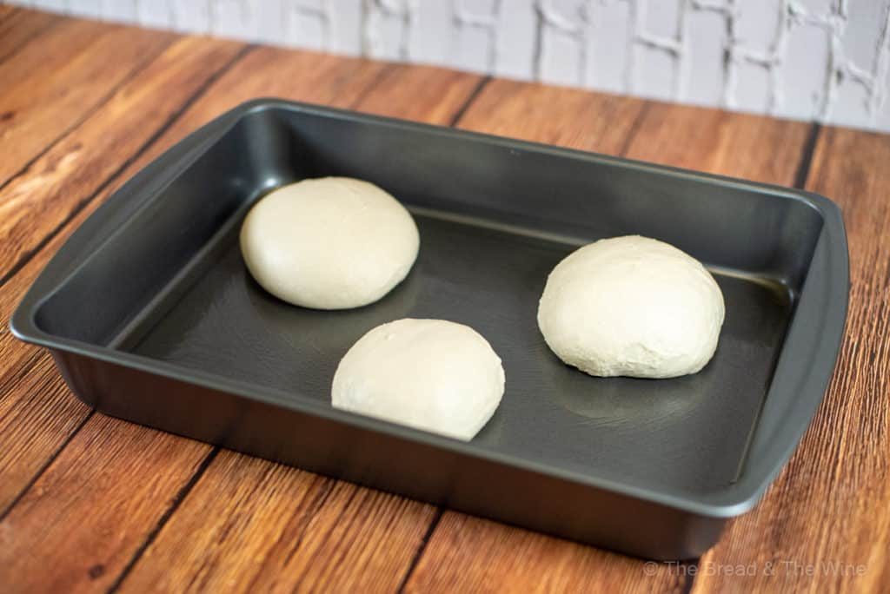

Sourdough Pizza Dough Recipe

Description
I love this quick sourdough pizza dough recipe. Also, I do not know if sourdough pizza dough is grammatically correct, so for the rest of the post, I will just refer to it as sourdough. Anywho, I’ve been experimenting with sourdough throughout the COVID-19 season and I’ve had a blast trying different things like this pizza dough recipe. I found that this recipe is amazing for homemade New York style pizza. Not only is it easy, but in only 12 to 24 hours, you have an incredibly flavorful dough with a perfect texture. I hope you enjoy!
Ingredients
- 350 grams of bread flour (about 2 3/4 cups)
- 225 grams of mature sourdough starter (about 1 cup)
- 180 grams of ice-cold water (about 3/4 cup)
- 25 grams of sugar or honey (about 2 tablespoons)
- 3 cloves of garlic
- 13 grams of high-quality extra virgin olive oil plus extra for greasing bowls (about 1 tablespoon)
- 12 grams of kosher salt (about 2 teaspoons)
Steps
- The first step is to measure out 225 grams (or 1 cup) of mature sourdough starter. Note, if you do not have a mature sourdough starter, it is a process that will take about a week. I recommend this sourdough starter. After carefully following the directions that came with it, I personally had great success. Alternatively, King Arthur Baking has a great recipe as well.
- In a food processor, stand mixer, or large bowl, add flour, starter, water, and sugar or honey. If using a food processor, use the pulse setting about 5-10 times until the dough comes together. If using a stand mixer or large bowl and wooden spoon, mix for about 1 minute until a rough ball of dough forms.
- Add olive oil and salt. Pulse about 5 times if using a food processor or mix for about 1 minute if using a stand mixer or large bowl and wooden spoon, or until fully incorporated. Cover and let the dough sit for about 10 minutes.
- Transfer dough to a lightly oiled surface. The dough is very sticky, but do your best to form it into a large ball with a smooth top. Cover with a tea towel or large bowl and let sit for about 5 minutes.
- Using a bench scraper, divide the dough into 3 equal parts. Form each part into a ball with a smooth top. Place the dough balls into 3 very lightly oiled glass bowls, or into a lightly greased cake pan that has a lid.
- Cover with a lid and place into a refrigerator to ferment overnight, or around 12-24 hours. The longer you ferment, the better. 1 hour before you want to make pizza, remove the dough from the fridge, reform it into balls with smooth tops, cover and let proof for 1 hour. Again, it works great with my New York style pizza recipe. Enjoy!
Click here for more recipes!